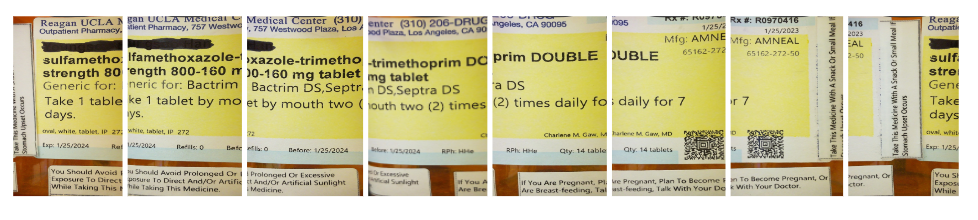

Contact Information
Email: tkhan314@ucla.edu, tomkhan27@gmail.com
Phone: 949-331-8960
LinkedIn: https://www.linkedin.com/in/tamjid-khan-6a2562177/
Github: https://github.com/TomKhan63
Resume
Software Skills
- C/C++
- Python
- Linux
- Arduino IDE
- React Native/Javascript
- Visual Studio Code Extensions
Hardware Skills
- Circuit Design Logic
- Motors and Motor Drivers
- Verilog and Xilinx
- Cadence Virtuoso
- Basic 3D Printing
OML Alexandria
Visual Studio (VS) Code is a very popular environment for creating and editing code. It provides support for a variety of different languages through extensions. Ontological Modeling Language (OML) is a systems engineering language that is designed to model relationships between structures and objects similar to unified modeling language (UML). It was developed by a team of NASA engineers called openCAESAR, one of whom was the Professor for our class that assigned this project.
OML Alexandria is a VSCode extension created by our UCLA project group for CS130 - Software Engineering: Team Ptolemy. Our group created an extension that uses Langium to provide language support for the OML language. This includes features such as syntax highlighting, code refactoring, code folding, goto definition, and many more. Furthermore, the extension provides a method to visualize the code using UML-like diagrams to show objects and their relationships

The above picture shows an example of an OML file being visualized as a diagram.
MediMate: Smart Pill Dispenser
For my Capstone Project in ECE183 - Robotic Systems, I worked in a group of 5 on a prototype for a robot called MediMate. The intuition behind the project was to create a robot that can scan pill bottles and store dosage information internally. Additionally, it would store the pills and automatically dispense them. Although our final prototype was unable to automatically dispense pills, it was able to scan and schedule pill dosages.
Overview of Design
Final System Design
The primary processing unit used in the prototype was a Raspberry Pi Zero W. This was because the libraries we planned to use Python scripts and Libraries for most of the software. Furthermore, we utilized the Raspberry Pi camera module ArduCam to easily take pictures that can be stored instantly on the Pi. The following diagram showcases the software pipeline that makes up the bulk of the project.
Software Pipeline Diagram
Software Pipeline Breakdown
The pills are first scanned using a small plate that rotates in 8 increments. After 8 pictures are taken by the camera, the photos are processed using unwrapping and stitching. These algorithms use OpenCV Python to process images.
Unwrapping
Cropping and unwrapping of pill label image
Unwrapping is necessary to remove the curvature of the label. This allows the images to be stitched properly into a panorama. After all 8 images are unwrapped, it then gets combined into a full panoramic label.
Stitching
Stitching of 8 images into panoramic label.
The images are combined into one image of the full label. Now, this image is taken into the Optical Character Recognition (OCR) script.
OCR
Convert an image into raw text
This script uses PyTesseract to read the image and generate a long string of all the text that was recognized. The text is then parsed in Python to extract fields necessary for storage and dispensing. These fields include: Name, quantity, and dosage. These fields are transferred as input into the Scheduling script.
Scheduling
Schedule dosages given fields from OCR
The Scheduling Algorithm involves multiple steps. First, it uses Crontab to schedule tasks. Crontab is a Linux based job scheduler. It allows users to run a command at specified times indefinetely. The scheduling algorithm creates a crontab entry at the correct times given by the daily dosage. The entry runs another script: Controller.py, which will activate the motors to dispense one pill
Dispensing
Pills are stored on a rotating plate of 8 slots. 7 of the slots are containers that store pills. The last slot is an empty hole that is used for dispensing. For dispensing, the mechanism that was chosen was a vacuum tube. This was to ensure that only one pil would be dispensed at a time. A tube at the end of the pump would be sized to the smallest pill size, so the pill would not be sucked into the tube, but rather suspended at the end of the tube. The Dispensing Algorithm works as follows:
- Rotate the plate to the appropriate container
- Activate the vacuum pump
- Lower the vacuum pump tube
- Raise the vacuum pump tube
- Reset plate to original position
- Deactivate the vacuum pump
In this prototype, the dispensing mechanism is not fully automatic as evident in the video. The additional funds needed to automate this tasks would have exceeded our budget for thus project. In the Final Product, however, a linear actuator and pneumatic sensors would be necessary to lover/raise the pump and to detect if a pill is picked up by the vacuum.